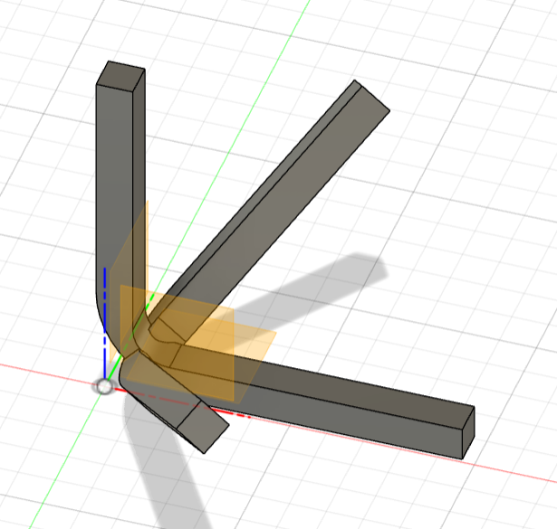
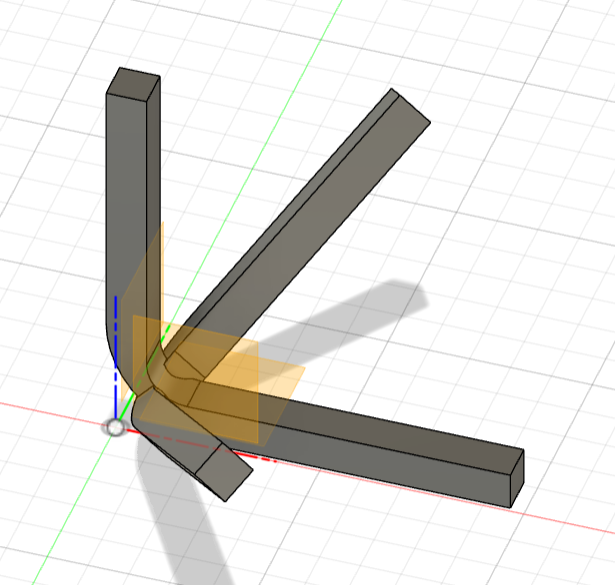

＜ストーリーボード＞

- ＜対象＞
- 指が思うように動かない人
- 力が弱い人、子供
＜設計図＞

＜完成品＞
stlファイル
＜作品の説明＞
普通のピンセットでは足が二本なので指が痛い人や力が入りずらい人に
向けて制作した三つ足のピンセットである。三本の足にすることで、二本
足のモノに比べて安定感があり、より使いやすい形状を求めた結果この形になった。
＜この作品に至るまで＞
ピンセットの課題が出されてからいろいろなピンセットを考えて見たが、その中でも
一番しっくりときたのが足を増やしてみるという発想だった。なかなか二本足以外のピンセット
を見ることがないため作ろうと思った。
ピンセットの課題が出されてからいろいろなピンセットを考えて見たが、その中でも
一番しっくりときたのが足を増やしてみるという発想だった。なかなか二本足以外のピンセット
を見ることがないため作ろうと思った。
＜作りながら気づいたこと＞
最初は、三本足のピンセットを作ろうと思っていたが難しいと思い四本足のピンセットを目指していた。
しかし、四本足のピンセットを作ってみたところ根元が集まるところがどうしても固くなってしまい、思うように
動かなかった。その時にここを三本にすることでその負担がなくなるのではと感じ再び三つ足を目指した。結果的に三本足に戻れた！
最初は、三本足のピンセットを作ろうと思っていたが難しいと思い四本足のピンセットを目指していた。
しかし、四本足のピンセットを作ってみたところ根元が集まるところがどうしても固くなってしまい、思うように
動かなかった。その時にここを三本にすることでその負担がなくなるのではと感じ再び三つ足を目指した。結果的に三本足に戻れた！
＜四本の場合＞＊プリントしたものは負荷に耐え切れず足が折れてしまった。ここで三つ足に変更した
 
